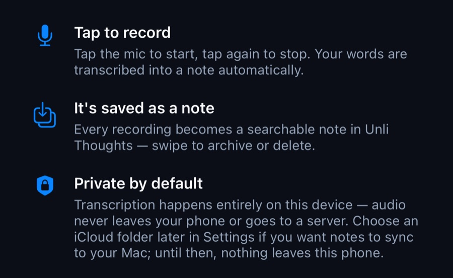
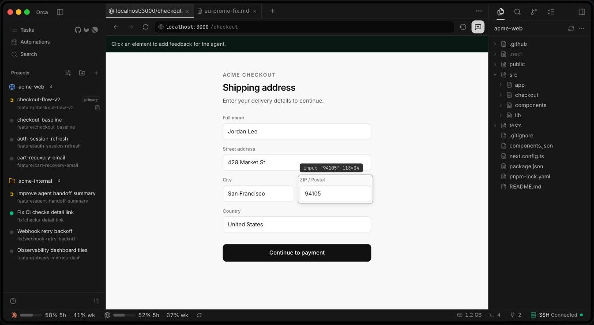
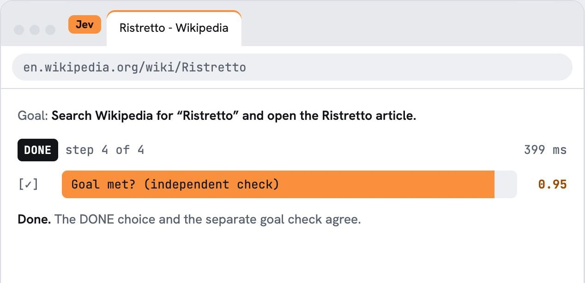
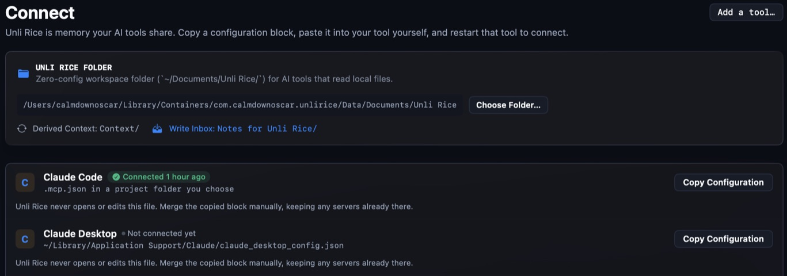
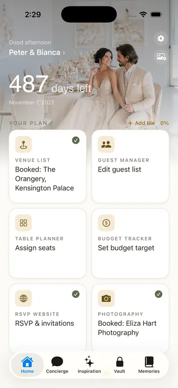
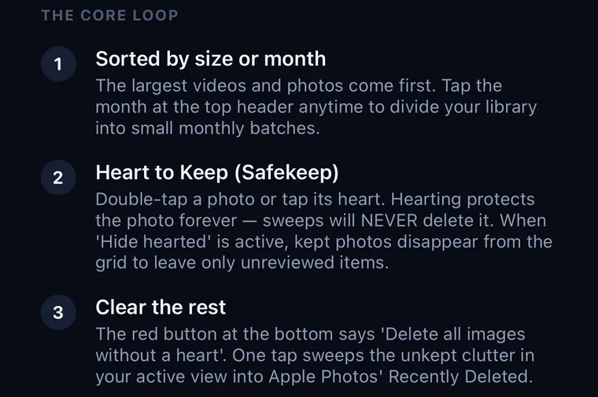
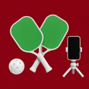
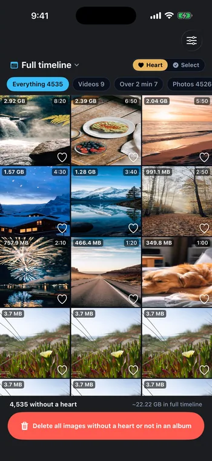
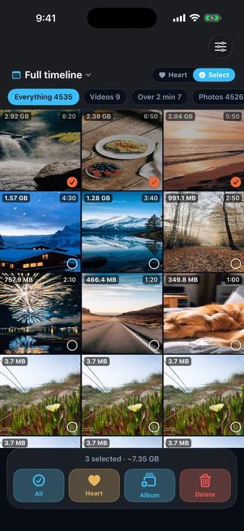
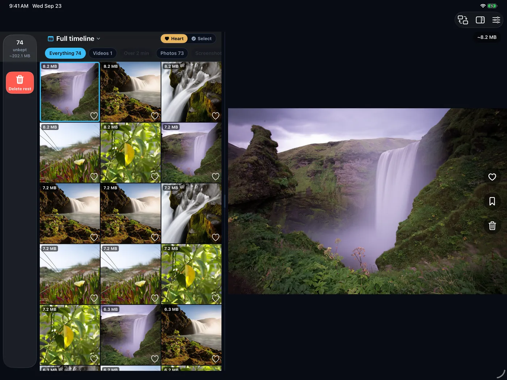

01
Purpose
Which data does the task actually need?
Unli Rice Capture transcribes on the phone. Audio never leaves it.
See the example

How I work
I run a one-person studio. AI helps me plan, build and check the work; I own the decisions.
I start with the Idea clinic to check what already exists, challenge my assumptions and choose a small test before building.
I can fill in the questionnaire myself and take its critique prompt to the AI I already use, or ask an LLM to handle the whole process and read the findings back to me. An assistant that supports WebMCP can get the prompt directly from the page.
I work from a written spec. I name who the work is for, the task, scope, constraints and what a passing result looks like. Significant changes get an intent, a plan and review; small edits stay small.
In Orca, I give a builder a bounded brief and an isolated task branch or worktree. The brief says what can change and how to check it.
I create my own agents and workflows around the tasks I repeat.

I review the diff and run relevant tests. For web work, I also check real browser paths with Jev Browser Control: Jev clicks, types and scrolls while the main assistant defines the goal and checks the outcome.

Unli Rice retrieves decisions, guardrails and next steps through MCP. I check the repository for current technical facts.
A reader can understand how I build.
Rewrite this page; keep the existing site navigation and privacy examples.
Links work, the page reads on mobile, and keyboard users can open the examples.
I use stronger reasoning for uncertain decisions and smaller models for well-specified work. That keeps usage for the decisions that need it.
Opus for planning and review; Sonnet or Haiku for scoped builds when I work in Claude.
Routine planning and review.
Complex architecture and unresolved tradeoffs.
Implementation from a bounded spec.
Small mechanical edits.
I use a review bridge between Claude and Codex: the model that did not plan the work reviews it. A pre-mortem challenges the plan before the build; a post-mortem checks the finished changes against it. Findings and replies stay in a shared review document.
01
Which data does the task actually need?
Unli Rice Capture transcribes on the phone. Audio never leaves it.

02
What crosses a boundary, and who allows it?
Unli Rice never edits another tool’s settings; you paste the block yourself.

03
Your plans, across Apple devices.
Wedding Concierge syncs your main wedding plan through CloudKit on iPhone, iPad and Mac. Use the same iCloud account. No separate app login.

04
If something goes wrong, how is it undone?
ClearSpace clears to Recently Deleted, with 30 days to undo.


Shuttle & Kitchen Vision Phones link to each other directly. No router, no server.AlwaysOnly if you choose
From React Native to Swift.
React Native, with subscriptions.
Rebuilt natively in Swift and SwiftUI, sharing one photo engine with Unli Disk.
React Native→Swift · SwiftUINative app ships. Subscriptions replaced by a single $9.99 purchase.


Split view on iPad, sharper iCloud photos, sturdier purchases.
